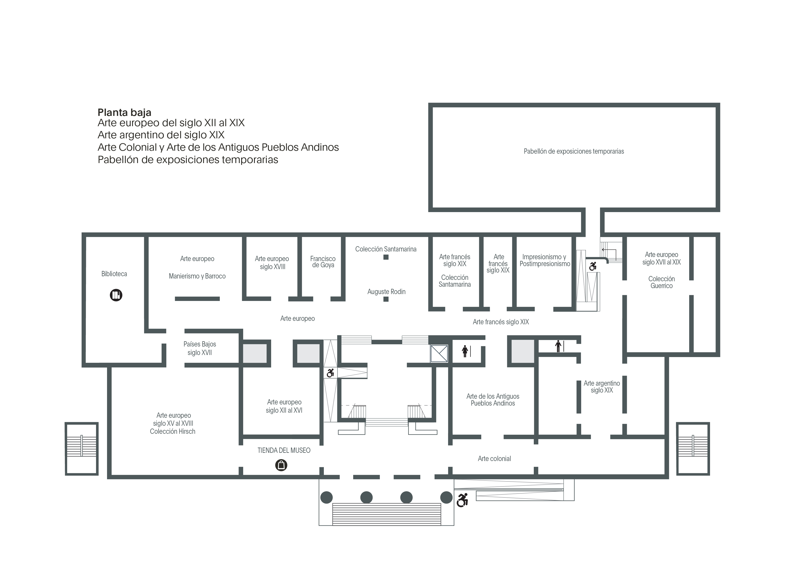
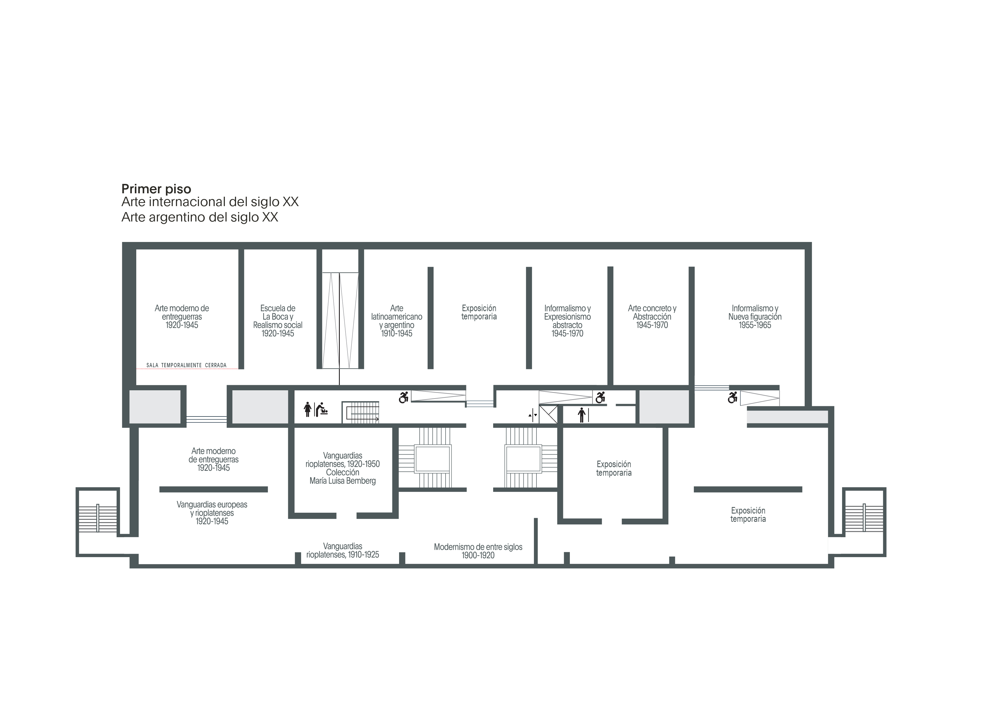

El Bellas Artes invita al público a recorrer todas sus salas de exposición permanente en la planta baja y el primer piso, y la muestra temporaria "Gerstein. Heras Velasco. Simon. Artífices del metal". La entrada es libre y gratuita. Consultá la programación completa de actividades gratuitas de mayo.
 Acceso a las salas